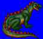
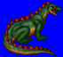
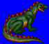
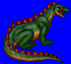

Height: 30 cm - 3 meters Weight: 5 - 300 lbs.
Habitat: Jungle Origin: Tropical areas
Meaning: English "lizard"
Lizards are like small dinosaurs. Many types exist, including those that can change the color of its skin to match its environment and some that can glide at low altitudes. The kind that typically appear in RPGs are small lizards that can poison or paralyze its prey with a single bite.